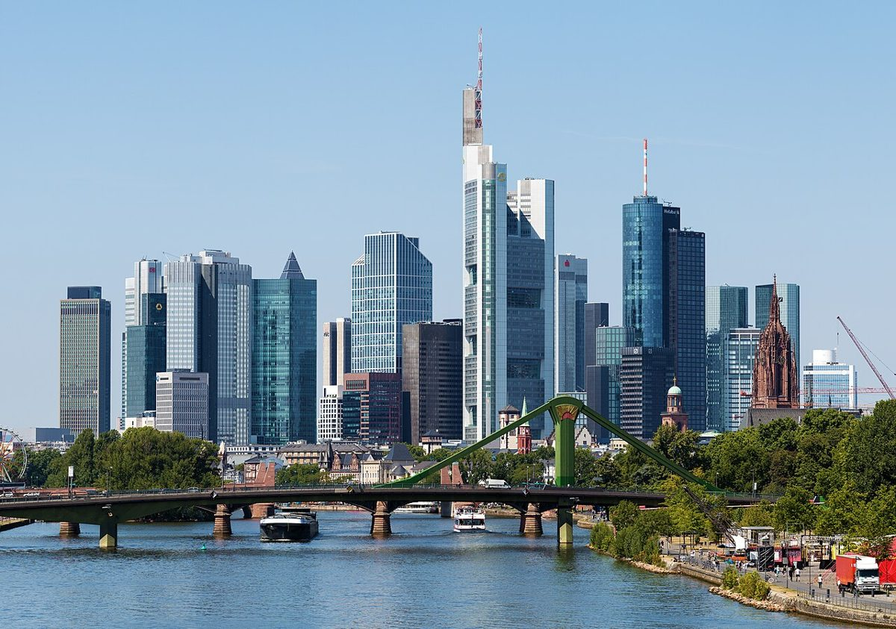

Frankfurt Skyline : Explorer la Métropole Allemande entre Modernité et Tradition

Francfort-sur-le-Main, souvent appelée simplement Francfort, est une métropole allemande fascinante où se côtoient gratte-ciel ultramodernes et bâtiments historiques. Sa skyline unique en Europe lui vaut le surnom de Mainhattan, mélange de Main (le fleuve qui la traverse) et de Manhattan. Si vous prévoyez une escapade dans cette ville dynamique, voici un guide pour en profiter pleinement.
Anreise : Comment se rendre à Francfort ?
Francfort est idéalement située au cœur de l'Europe, ce qui en fait une destination facilement accessible. L'aéroport de Francfort (FRA) est l'un des plus grands hubs d'Europe, avec des vols internationaux et des correspondances pratiques. Depuis la France, des trains à grande vitesse (ICE ou TGV) relient également Paris et d'autres villes françaises à la gare centrale de Francfort en quelques heures.
En voiture, Francfort est bien connectée via les autoroutes allemandes (Autobahn), mais attention aux embouteillages aux heures de pointe. Une fois sur place, les transports en commun (métro, tram et bus) sont efficaces pour explorer la ville.
Meilleure période pour visiter Francfort
Le printemps (avril à juin) et l'automne (septembre à octobre) sont les saisons idéales pour découvrir Francfort. Les températures sont agréables, et les parcs de la ville (comme le Palmengarten) sont magnifiques. L'été peut être chaud et humide, tandis que l'hiver offre un charme particulier avec ses marchés de Noël, mais les jours sont courts.
Les incontournables de la Frankfurt Skyline
1. Main Tower et sa vue panoramique
Pour une vue à couper le souffle sur la skyline, montez à la Main Tower. C'est l'un des rares gratte-ciel ouverts au public. L'ascenseur rapide vous emmène à une plateforme d'observation où vous pourrez admirer Francfort à 360 degrés, de jour comme de nuit.
2. Le quartier historique de Römerberg
Malgré son aspect ultramoderne, Francfort possède un charmant quartier historique. Römerberg est la place centrale, bordée de maisons à colombages parfaitement restaurées. Ne manquez pas l'Hôtel de Ville (Römer) et l'église Saint-Nicolas.
3. Promenade le long du Main : Les Museumsufer
Les rives du Main offrent une agréable promenade, surtout du côté des Museumsufer (Quais des musées). Plus de dix musées s'y trouvent, dont le Städel Museum (art classique et moderne). Une balade en bateau-mouche est aussi un excellent moyen de voir la ville autrement.
4. Le quartier branché de Sachsenhausen
De l'autre côté du Main, Sachsenhausen est réputé pour ses bars traditionnels (Apfelweinlokale), où l'on déguste le cidre local (Apfelwein). Le soir, l'ambiance y est conviviale et typiquement francfortoise.
5. La moderne Eurotower
Si vous vous intéressez à la finance, la Eurotower, ancien siège de la Banque centrale européenne, vaut le coup d'œil. Le quartier environnant (Bankenviertel) regorge d'architecture contemporaine impressionnante.
Spécialités culinaires à goûter
La cuisine francfortoise est riche et savoureuse. Essayez absolument les Frankfurter Würstchen, des saucisses traditionnelles servies avec du pain et de la moutarde. Le Grüne Soße, une sauce verte à base d'herbes, accompagne souvent les plats. En dessert, le Bethmännchen (petit gâteau aux amandes) est une spécialité locale, surtout en période de Noël.
Pour une expérience typique, rendez-vous dans un Apfelweinlokal à Sachsenhausen, où vous pourrez déguster des plats régionaux comme des Handkäse mit Musik (fromage mariné) en sirotant du cidre.
Conclusion
Francfort est une ville surprenante qui mérite plus qu'un simple passage. Entre ses gratte-ciel futuristes, ses coins historiques et ses délices culinaires, elle offre un mélange unique en Allemagne. Que ce soit pour un week-end ou un plus long séjour, la Frankfurt Skyline ne vous laissera pas indifférent.
Haiktec
- Économiser Sans Stress : 7 Stratégies Simples pour Mieux Gérer Vos Finances Personnelles
- Planificateur de Contenu YouTube & Suivi des Performances
- Guide Pratique pour Enseignants: 7 Stratégies Simples pour Gagner du Temps et Améliorer Vos Cours
Text mit KI erstellt und automatisch geprueft.